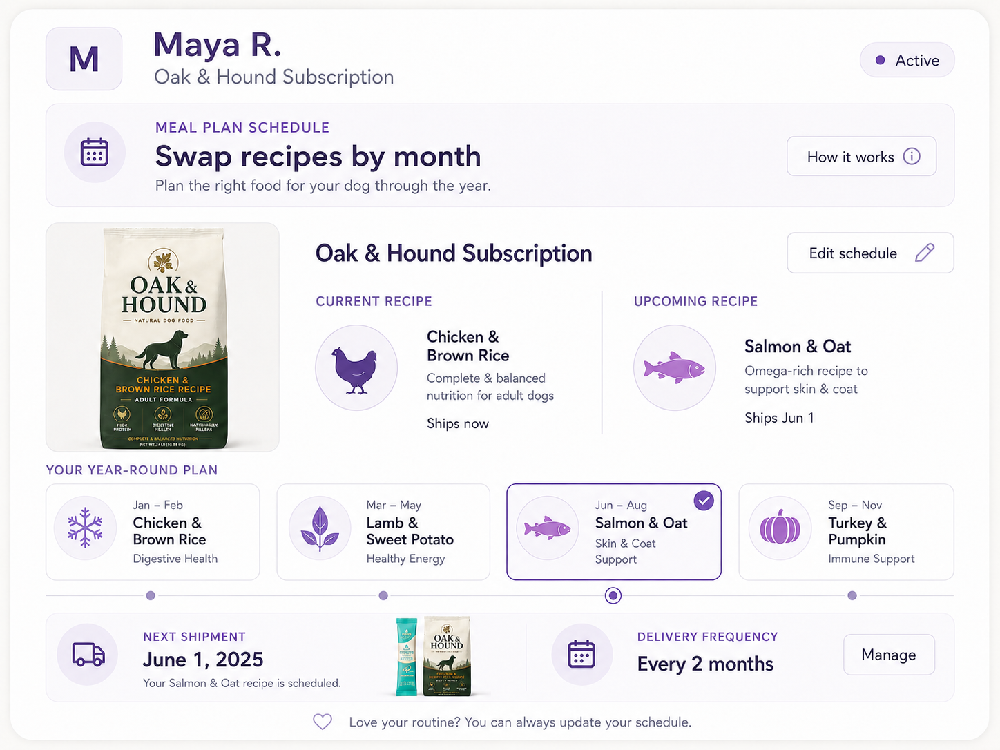
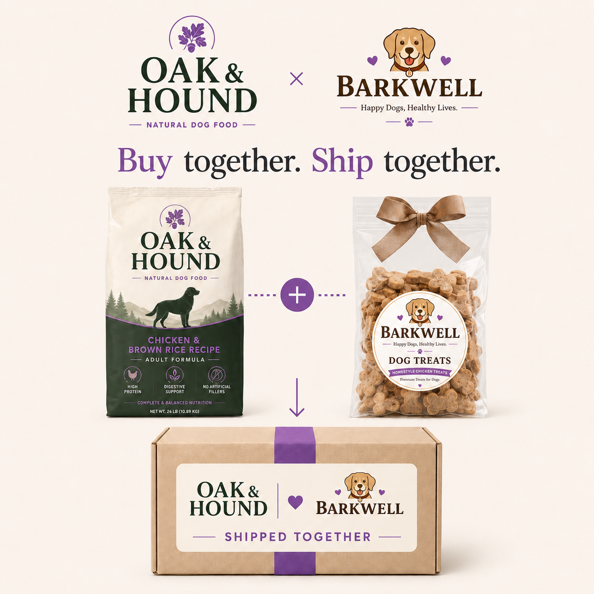
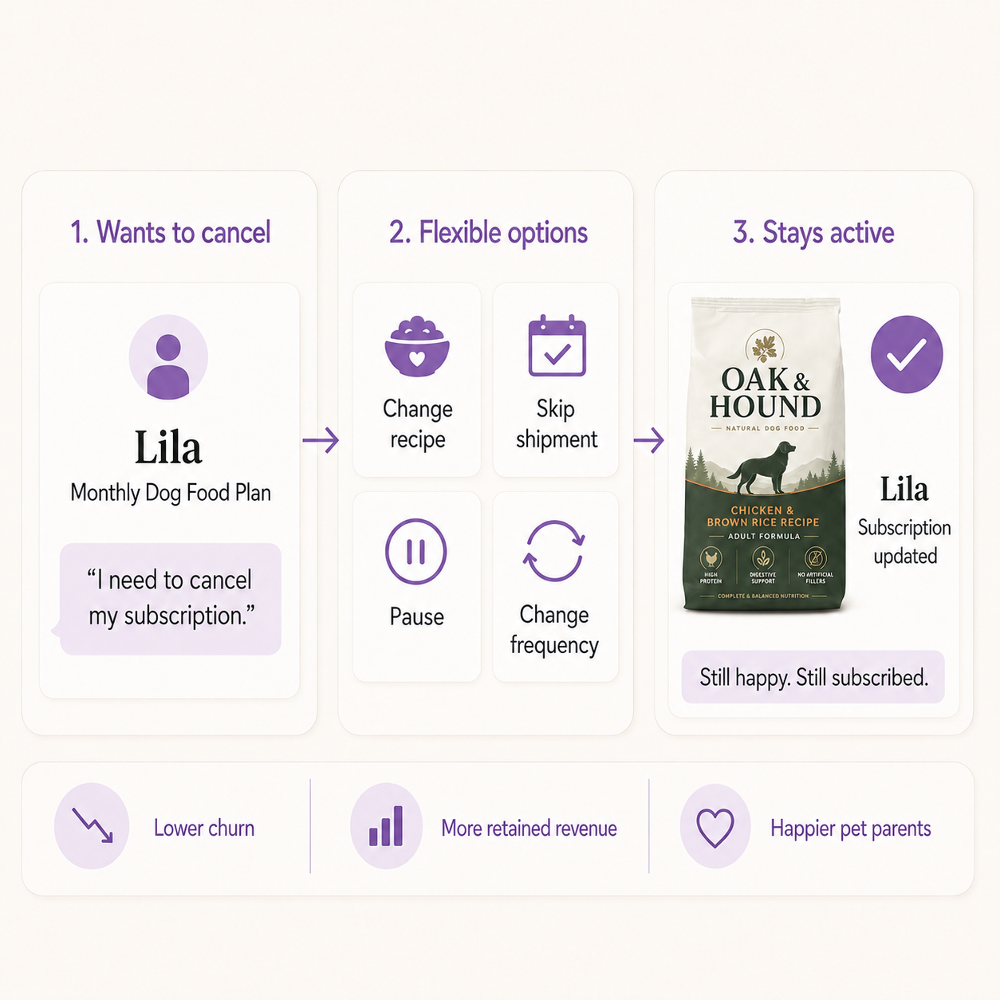

Your Customers' Dogs Change. Their Subscription Should Too.
Inside how pet brands use Rebillia to keep subscribers active through every recipe swap, cadence change, and life stage.
One subscription that flexes with every recipe, cadence, and life stage.
A puppy's food is not a senior dog's food. A dog that loved a chicken recipe in the spring might need a salmon formula to support its coat by summer. A pet parent may have too much food at home after travel, or want to add treats before the holidays. Pet subscriptions are built around a living, growing animal, and its needs rarely stay still.
Pet product subscriptions are habitual, seasonal, and tied to a pet's life stage. Most subscription systems are not built to move with them.
That is the quiet reason pet brands lose subscribers who never stopped loving the product. The dog didn't stop eating; the pet parent just needed the plan to flex, to swap a recipe, slow the cadence, add treats, or pause without restarting, and the system made that harder than cancelling. Rebillia was built to close that gap.
Billing Built Around the Parts That Actually Change
Instead of treating a subscription as one fixed recipe on one fixed interval, Rebillia breaks it into independent parts: recipe, quantity, cadence, price, and payment method. Each part can be adjusted mid-subscription without cancelling, recreating the order, or losing the pet's history.
A pet parent can swap a recipe as their dog's needs change, add treats or a supplement, slow the cadence when there's too much at home, pause for travel, or update a card, all while the underlying subscription stays intact. For pet brands, that turns subscription management from a support burden into infrastructure that protects the customer relationship through the normal changes that used to end it.
Each part adjusts on its own, no cancel, no rebuild.
Recipes that keep up with every dog
A pet parent starts on a chicken recipe in winter, switches to a coat-supporting salmon formula for summer, adds treats before the holidays, and pauses for a two-week trip, all on the same subscription. Each of those would normally mean a separate order or a cancellation. On Rebillia they make the change themselves in a tap, or the brand makes it in seconds, and billing continuity, the pet's history, and renewal cadence stay intact the entire way through.

The Same Pattern Shows Up Across Pet
Pet brands running flexible subscriptions on Rebillia span dry food, fresh food, treats, supplements, and grooming, from single-recipe brands to full nutrition lines. These brands span different products and price points, but they share one thing: pet parents need to adjust their plan as their pet changes, without losing the subscription.
The point is not name-dropping. The point is that Rebillia already serves the category where recurring revenue depends on what happens after the first order: the recipe swap, the added treats, the seasonal formula, the skipped bag, the payment update, and the moment when flexibility could save the relationship instead of ending it.
The subscription adapts at every step, the customer never cancels.
Better Together: Build Subscriptions Across Brands
Two complementary pet brands, like a dog food brand and a treats brand, sell one joint subscription. The customer subscribes once and gets both; each brand keeps its own catalog, pricing, and payouts, for a bigger basket with no custom integration.

The Subscription Moment That Changes
| Subscriber moment | Rigid subscription workflow | Rebillia workflow |
|---|---|---|
| Wants a different recipe | Cancels the current plan, restarts with a new recipe, or waits on support to rebuild the subscription. | Swaps the recipe for the next shipment while preserving the pet's history, billing continuity, and renewal cadence. |
| Has too much food at home | Cancels because the fixed schedule no longer matches how fast the dog eats. | Skips the next bag or slows the cadence, then continues when the pet parent is ready. |
| Wants to add treats or a supplement | Uses a separate checkout or manual workaround that does not connect cleanly to the subscription. | Adds the treats or supplement to the next recurring shipment while keeping the subscription intact. |
| Needs to pause for travel or a vet change | A simple request turns into a support ticket or cancellation risk. | Pauses, adjusts the recipe, or updates the address inside the existing subscription. |
| Payment method fails or needs updating | Gateway and subscription logic sit in separate systems, creating cleanup and interruption risk. | Payment and billing logic stay connected through RebilliaPay so the customer can update the payment method and billing can continue. |
Turn cancellations into opportunities
Pet subscribers rarely cancel because they stopped loving the product. They cancel because their dog's needs changed, they had too much food at home, or they wanted to skip a bag, and the billing system couldn't absorb it without a cancel-and-restart. In a category tied to a living, growing animal, a rigid subscription turns every ordinary change into a churn risk. Rebillia makes recipe, quantity, cadence, and payment independent parts a pet parent can adjust in seconds, so the moments that used to end a subscription keep it running instead.

For Pet Brands
Pet churn happens for a specific, fixable reason: the billing system cannot keep up with how a dog's needs, and a pet parent's routine, actually change over time.
A brand does not need to lose a subscriber just because their dog needs a different recipe, a smaller bag, a slower cadence, an added treat, or a payment update. Those are not cancellation moments. They are adjustment moments.
"Legacy systems manage subscriptions. Rebillia manages subscription behavior."
Ready to Grow Your Recurring Revenue?
If your subscription cannot handle a recipe swap, a skipped bag, an added treat, a pause, or a payment update without pushing the customer toward cancellation, talk to us about what that could look like for your brand.